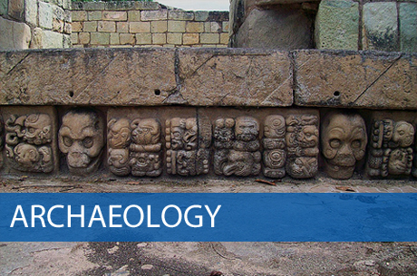

The nature and aims of archaelogy
Archaeology is partly the discovery of the treasures of the past, partly the careful work of the scientific analyst, partly the exercise of the creative imagination. It is toiling in the sun on an excavation in the Middle East, it is working with living Inuit in the snows of Alaska, and it is investigating the sewers of Roman Britain. But it is also the painstaking task of interpretation, so that we come to understand what these things mean for the human story. And it is the conservation of the world's cultural heritage against looting and careless harm.
Archaeology, then, is both a physical activity out in the field, and an intellectual pursuit in the study or laboratory. That is part of its great attraction. The rich mixture of danger and detective work has also made it the perfect vehicle for fiction writers and film-makers, from Agatha Christie with Murder in Mesopotamia to Stephen Spielberg with Indiana Jones. However far from reality such portrayals are, they capture the essential truth that archaeology is an exciting quest - the quest for knowledge about ourselves and our past.
But how does archaeology relate to disciplines such as anthropology and history, that are also concerned with the human story? Is archaeology itself a science? And what are the responsibilities of the archaeologist in today's world?
Anthropology, at its broadest, is the study of humanity - our physical characteristics as animals and our unique non-biological characteristics that we call culture. Culture in this sense includes what the anthropologist, Edward Tylor, summarised in 1871 as 'knowledge, belief, art, morals, custom and any other capabilities and habits acquired by man as a member of society'. Anthropologists also use the term 'culture’ in a more restricted sense when they refer to the ‘culture1 of a particular society, meaning the non-biological characteristics unique to that society, which distinguish it from other societies. Anthropology is thus a broad discipline - so broad that it is generally broken down into three smaller disciplines: physical anthropology, cultural anthropology and archaeology.
Physical anthropology, or biological anthropology as it is also called, concerns the study of human biological or physical characteristics and how they evolved. Cultural anthropology - or social anthropology - analyses human culture and society. Two of its branches are ethnography (the study at first hand of individual living cultures) and ethnology (which sets out to .compare cultures using ethnographic evidence to derive general principles about human society).
Archaeology is the ‘past tense of cultural anthropology’. Whereas cultural anthropologists will often base their conclusions on the experience of living within contemporaly communities, archaeologists study past societies primarily through their material remains - the buildings, tools, and other artefacts that constitute what is known as the material culture left over from former societies.
Nevertheless, one of the most important tasks for the archaeologist today is to know how to interpret material culture in human terms. How were those pots used? Why are some dwellings round and others square? Here the methods of archaeology and ethnography overlap. Archaeologists in recent decades have developed ‘ethnoarchaeology’, where, like ethnographers, they live among contemporary communities, but with the specific purpose of learning how such societies use material culture - how they make their tools and weapons, why they build their settlements where they do, and so on. Moreover, archaeology has an active role to play in the field of conservation. Heritage studies constitutes a developing field, where it is realised that the world's cultural heritage is a diminishing resource which holds different meanings for different people.
If, then, archaeology deals with the past, in what way does it differ from history? In the broadest sense, just as archaeology is an aspect of anthropology, so too is it a part of history - where we mean the whole history of humankind from its beginnings over three million years ago. Indeed, for more than ninety-nine per cent of that huge span of time, archaeology - the study of past material culture - is the only significant source of information. Conventional historical sources begin only with the introduction of written records around 3,000 BC in western Asia, and much later in most other parts of the world.
A commonly drawn distinction is between pre-history, i.e. the period before written records - and history in the narrow sense, meaning the study of the past using written evidence. To archaeology, which studies all cultures and periods, whether with or without writing, the distinction between history and pre-history is a convenient dividing line that recognises the importance of the written word, but in no way lessens the importance of the useful information contained in oral histories.
Since the aim of archaeology is the understanding of humankind, it is a humanistic study, and since it deals with the human past, it is a historical discipline. But it differs from the study of written history in a fundamental way. The material the archaeologist finds does not tell us directly what to think. Historical records make statements, offer opinions and pass judgements. The objects the archaeologists discover, on the other hand, tell us nothing directly in themselves. In this respect, the practice of the archaeologist is rather like that of the scientist, who collects data, conducts experiments, formulates a hypothesis, tests the hypothesis against more data, and then, in conclusion, devises a model that seems best to summarise the pattern observed in the data. The archaeologist has to develop a picture of the past, just as the scientist has to develop a coherent view of the natural world.
Questions 1-6
Do the following Statements agree with the claims of the writer in Reading Passage?
In boxes 1-6 on your answer sheet write
YES if the statement agrees with the claims of the writer
NO if the statement contradicts the claims of the writer
NOT GIVEN if it is impossible to say what the writer thinks about this
1 Archaeology involves creativity as well as careful investigative work.
2 Archaeologists must be able to translate texts from ancient languages.
3 Movies give a realistic picture of the work of archaeologists.
4 Anthropologists define culture in more than one way.
5 Archaeology is a more demanding field of study than anthropology.
6 The history of Europe has been documented since 3,000 BC.
Questions 7-8
Choose TWO letters A-E.
Write your answers in boxes 7-8 on your answer sheet.
The list below gives some statements about anthropology.
Which TWO statements are mentioned by the writer of the text?
A It is important for government planners.
B It is a continually growing field of study.
C It often involves long periods of fieldwork.
D It is subdivided for study purposes.
E It studies human evolutionary patterns.
Questions 9-10
Choose TWO letters A-E.
Write your answers in boxes 9-10 on your answer sheet.
The list below gives some of the tasks of an archaeologist.
Which TWO of these tasks are mentioned by the writer of the text?
A examining ancient waste sites to investigate diet
B studying cave art to determine its significance
C deducing reasons for the shape of domestic buildings
D investigating the way different cultures make and use objects
E examining evidence for past climate changes
Questions 11-14
Complete the summary of the last two paragraphs of Reading Passage.
Choose NO MORE THAN TWO WORDS from the passage for each answer.
Write your answers in boxes 11-14 on your answer sheet.
---End of the Test---
Please Submit to view your score, solution and explanations.